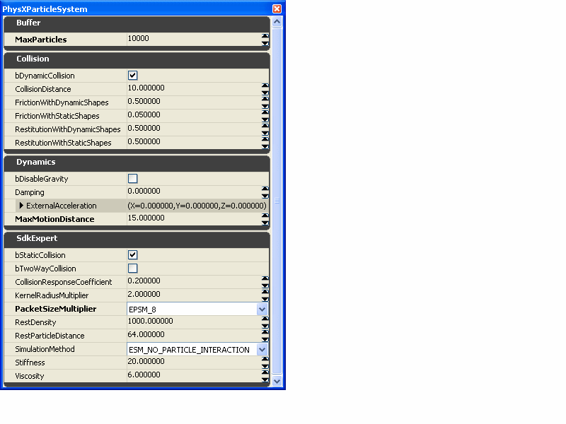
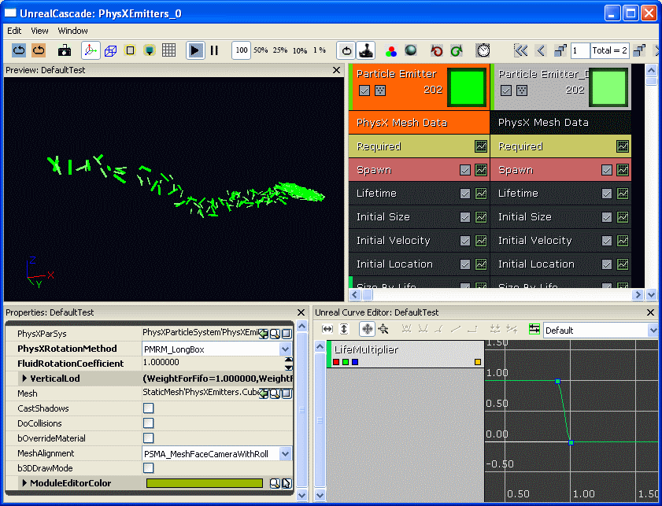
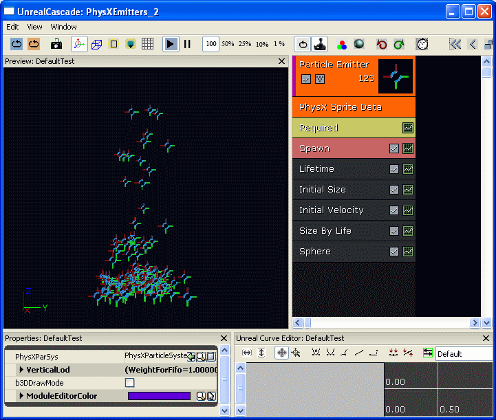

UDN
Search public documentation:
PhysXParticleSystemReference
日本語訳
中国翻译
한국어
Interested in the Unreal Engine?
Visit the Unreal Technology site.
Looking for jobs and company info?
Check out the Epic games site.
Questions about support via UDN?
Contact the UDN Staff
中国翻译
한국어
Interested in the Unreal Engine?
Visit the Unreal Technology site.
Looking for jobs and company info?
Check out the Epic games site.
Questions about support via UDN?
Contact the UDN Staff
PhysX Particle System Reference
Overview
The PhysXParticleSystem is a container for PhysX fluid parameters. This set of parameters is organized for better clarity in the editor, and also has some fields that reflect new parameters in 2.8.0 (which have just been integrated). The PhysXParticleSystem may be shared by many emitters, which allows you to easily re-use your tuning of the physical aspects of the particle simulation. The PhysXParticleSystem provides particle movement and collision with the PhysX scene. Additionally, it can be configured to perform SPH (Smoothed particle hydrodynamics) fluid simulation. PhysXParticleSystem objects can be used by referencing them from special PhysX emitter type data modules. There are two supported modules to pick from: PhysXMeshTypeData and PhysXSpriteTypeData. Both emitter types expose parameters for adjusting global LOD behaviour. The PhysXMeshTypeData can be used to display particles as rotating meshes. It is suitable for simulating small simple objects, such as debris or leaves. This type of emitter has been optimized with a fast instanced rendering path in order to enable massive particle effects. The PhysXSpriteTypeData can drive animation of all sorts of sprite particles through a PhysXParticleSystem. For all particles that are simulated using the PhysXParticleSystem objects, LOD can be controlled. The total amount of simulated particles, as well as particle lifetime and spawning behavior, can be adjusted for individual emitters.
PhysXParticleSystem
For creating a new PhysXParticleSystem, right click in the Content Browser and choose "New PhysXParticleSystem" from the context menu. The PhysXParticleSystem can then be edited when you double click on the icon.  Most commonly used parameters are exposed in the first three categories: Buffer, Collision, Dynamics. Parameters, which are less frequently used or are more difficult to tweak, as SPH parameters are listed under SdkExpert.
- Buffer
- MaxParticles - The maximum total number of particles for this PhysXParticleSystem.
- Collision
- bDynamicCollision - Enable/disable collision with dynamic rigid bodies.
- CollisionDistance - Distance at which particles collide with a rigid body surface.
- FrictionWithDynamicShapes - Friction coefficient for collision with dynamic rigid bodies.
- FrictionWithStaticShapes - Friction coefficient for collision with static rigid bodies.
- RestitutionWithDynamicShapes - Restitution coefficient for collision with dynamic rigid bodies.
- RestitutionWithStaticShapes - Restitution coefficient for collision with static rigid bodies.
- Dynamics
- bDisableGravity - Disables scene gravity for PhysXParticleSystem.
- Damping - Velocity damping.
- ExternalAcceleration - Acceleration vector, which is applied every simulation step.
- MaxMotionDistance - Limit how far particles can move within one simulation step.
- SdkExpert
- bStaticCollision - Enable/disable collision with static rigid bodies.
- bTwoWayCollision - Enable/disable two way interaction between particles and rigid bodies.
- CollisionResponseCoefficient - Scaling factor for two way interaction.
- KernelRadiusMultiplier - Defines particle interaction radius for SPH, relative to RestParticleDistance.
- PacketSizeMultiplier - Defines relative grid cell size for parallel computations.
- RestDensity - Sets the mass of the particles, a value around 1000 gives good results for SPH.
- RestParticleDistance - Defines the spacing of the particles in the rest state.
- SimulationMethod - Enables/disables SPH computations.
- Stiffness - SPH stiffness.
- Viscosity - SPH viscosity.
- Enabling bTwoWayCollision disables automatic orientation of mesh particles on collision.
- If using SPH, KernelRadiusMultiplier should usually be between 1.7 and 2.0 for good performance and behavior.
- When not using SPH, the RestDensity can be used to scale the effect of force fields on the particles. This might be necessary, since the current PhysX force fields don't support feature specific scaling.
- CollisionDistance and especially MaxMotionDistance should be set as low as possible for a given effect.
- In order to parallelize computations a regular grid in space is used. The grid cells (packets) are used for both collision and SPH dynamics.
- The packet size is defined with: KernelRadiusMultiplier * RestParticleDistance * PacketSizeMultiplier.
- The packet size is crucial for good performance for a given use case:
- Fewer packets (larger ones) are generally better for performance.
- The size has an impact on collision efficiency in terms of computation time (Also memory usage on the PPU [Physics Processing Unit]).
- For SPH a relative strict set of values for the three packet size defining parameters is valid.
- KernelRadiusMultlier needs to be set to about 2.0.
- RestParticleDistance is given by the effect scale.
- PacketSizeMultiplier can be choose dependent on how sparse the scenario is. If the particles are relative dense, choose a smaller size.
- For non-interacting particles the optimal set for collision needs to be chosen.
- KernelRadiusMultiplier and RestParticleDistance can be chosen rather large with respect to PacketSizeMultiplier in order to reduce memory consumption on the PPU.
PhysX Mesh Emitter
The PhysXMeshEmitter can be created by selecting the "PhysX Mesh Data" in the "Type Data" field within Cascade.  The property dialog for the "PhysX Mesh Data" contains a few PhysX specific properties:
- PhysXParSys - The PhysXParticleSystem which is used to simulate the particles.
- PhysXRotationMethod - Select a method which reflects the basic shape features of your particle mesh.
- FluidRotationCoefficient - Defines how much, linear velocity or collisions result in particle mesh rotation.
- VerticalLod - Parameters for global EmitterLodControl.
- Try to share the same PhysXParticleSystem for different emitters if possible.
- The generic PhysXRotationMethod should match your mesh as closely as possible. You might have to reorient your mesh in order to achieve a better fit.
PhysX Sprite Emitter
The PhysXSpriteEmitter can be created by selecting the "PhysX Sprite Data" in the "Type Data" field within Cascade.  The property dialog for the "PhysX Sprite Data" contains some PhysX specific properties:
- PhysXParSys -The PhysXParticleSystem which is used to simulate the particles.
- VerticalLod - Parameters for global EmitterLodControl.
Global Particle LOD
The Unreal emitter system provides LOD functionality based on distances. The PhysX emitter implementation provides additional LOD mechanisms which let you set global particle budgets. There are two basic methods to apply global particle LOD which can work in concert.
- FIFO mode - The particles of an emitter effect are organized in a priority queue. Particles which are older get a lower priority and are therefor removed earliest if the particle budget is exceeded. The priority for removing particles with respect to different emitter effects can be configured as well.
- Emission volume reduction - In order to meet a particle budget for a specific emitter, the emission volume can be reduced. The volume is defined as the product of the mean particle lifetime and the mean particle rate. The overall particle budget is distributed among all the active emitters.
- BaseEngine.ini (corresponding game ...Engine.ini, below "[Engine.PhysicsLODVerticalEmitter]")
- ParticlePercentage - Defines the global particle LOD setting in percentage.
- Default: 100
- ParticlePercentage - Defines the global particle LOD setting in percentage.
- WorldInfo.Physics.VerticalProperties.Emitters
- ParticlesLodMin - The global particle budget of the map at 0 ParticlePercentage.
- ParticlesLodMax - The global particle budget of the map at 100 ParticlePercentage.
- bApplyCylindricalPacketCulling - If set, packet distance is evaluated in the horizontal plane around the camera.
- PacketsPerPhysXParticleSystemMax - The upper limit for fluid packets for each PhysXParticleSystem. Sensible values are between 50 and 600, but try to keep this as few as possible.
- SpawnLodVsFifoBias - Defines how much emitter spawning rate and lifetime should be impacted by the global particle number restriction. 0 means that no emission volume reduction is applied.
- PhysXMeshTypeData.VerticalLOD / PhysXSpriteTypeData.VerticalLOD
- WeightForFifo - The relative weight for an emitter effect with respect to removing old particles. A relatively low value makes the system delete particles from the other emitter effects, if possible.
- WeightForSpawnLOD - Same as WeightForFIFO, but with respect to emission volume reduction.
- SpawnLodRateVsLifeBias - Defines how much the spawning volume should be affected by means of either reducing the emission rate or reducing particle lifetimes.
- RelativeFadeoutTime - Needs to be set to the fraction of the particle lifetime that is used to graphically fade out the particle. The LOD system will try to fade particles out rather than delete them immediately.
Limitations and known issues
- The PhysXMeshTypeData emitter only supports the SizeByLife update module. We plan to extend this at least with runtime vertex color updates.
- Real time preview doesn't work properly with PhysX emitters.
- Currently all PhysXMeshTypeData emitters of the same type are rendered in one batch. In the future we would like to support custom grouping of the emitter instances for batched rendering.
- PhysX emitters don't work with the Cascade preview collision mesh.
- No support for emitter warm up time.
- bUseLocalSpace is not supported! (All PhysX particles will use world space).
Downloads
- Download an example of physics particle systems.